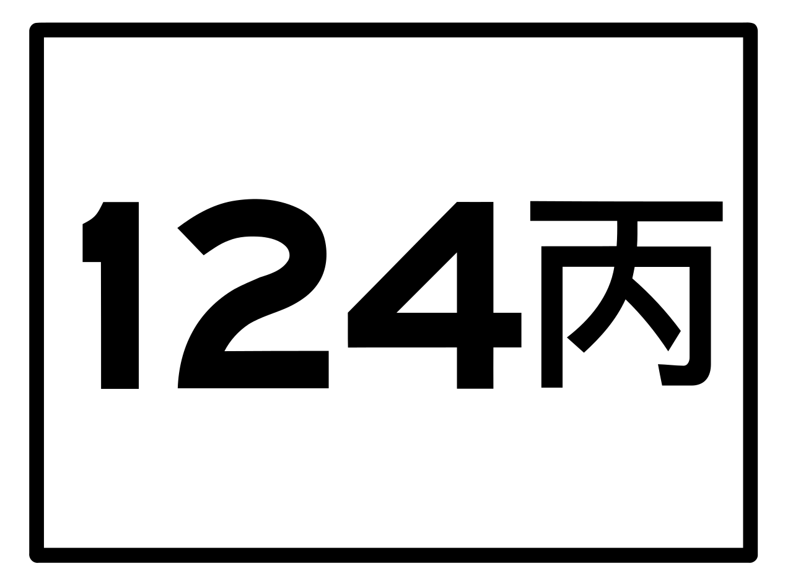
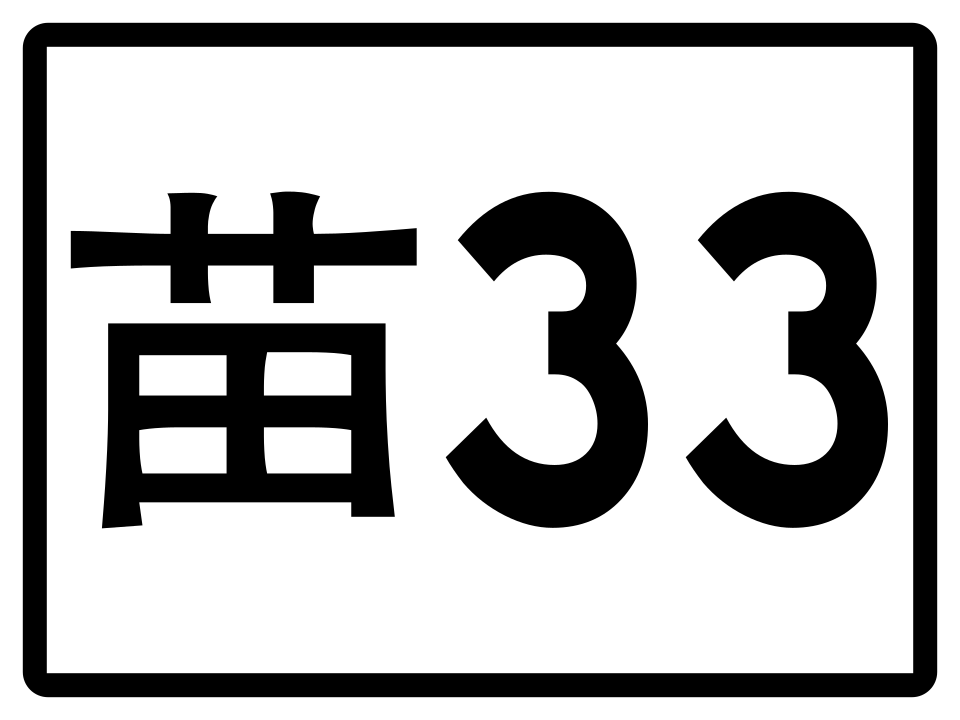
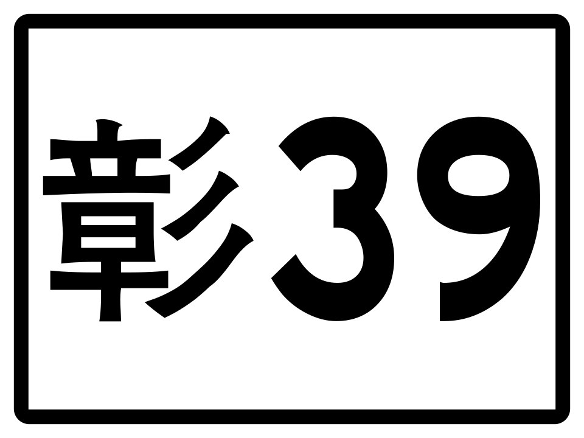
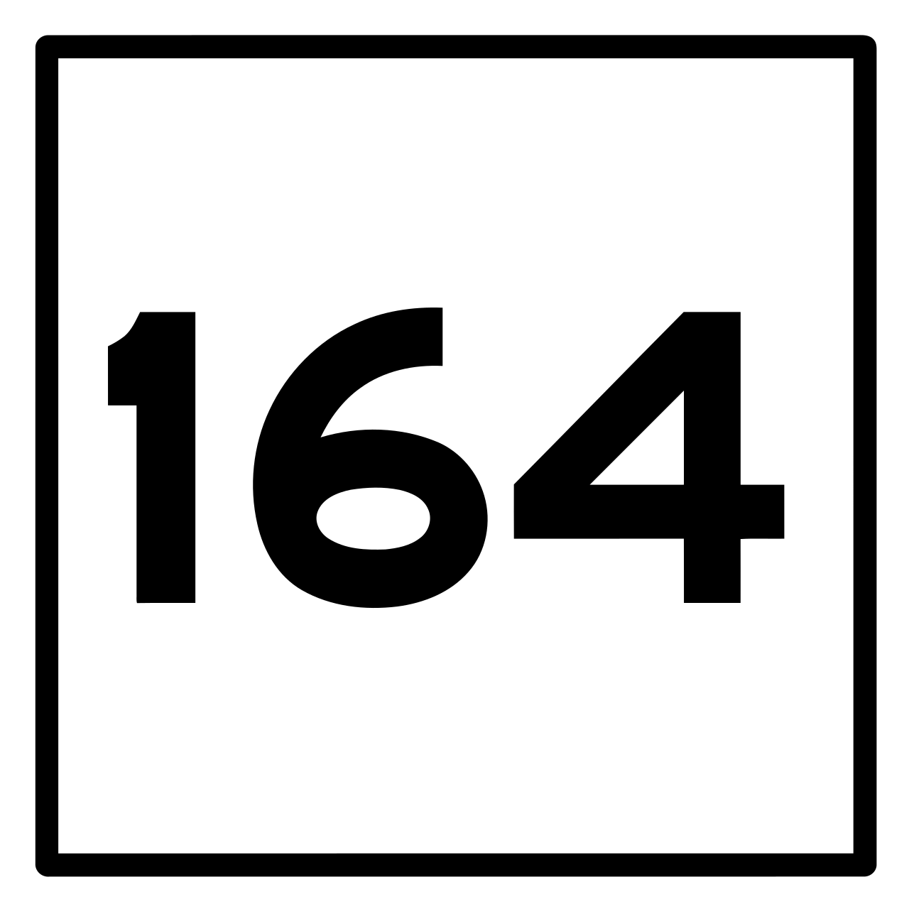
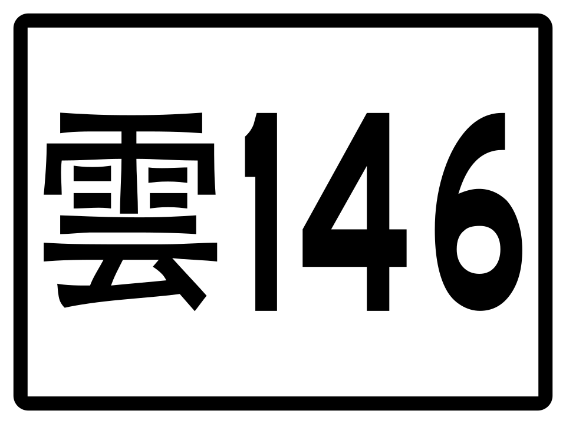
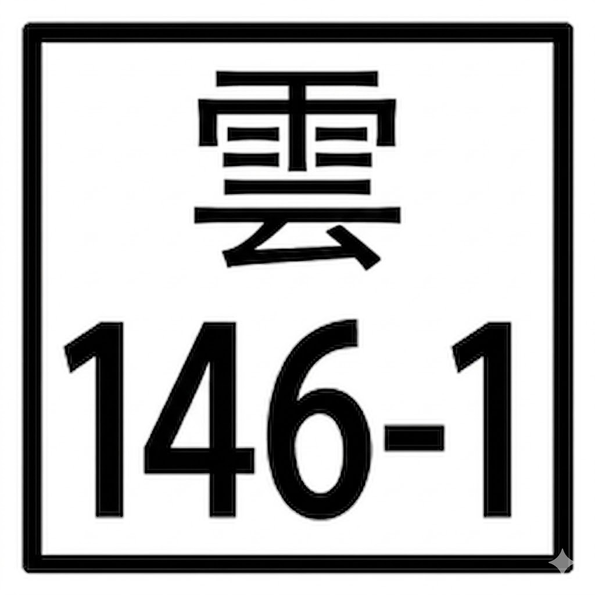
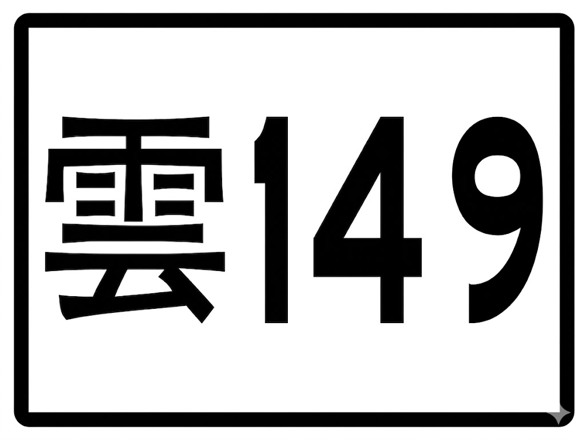
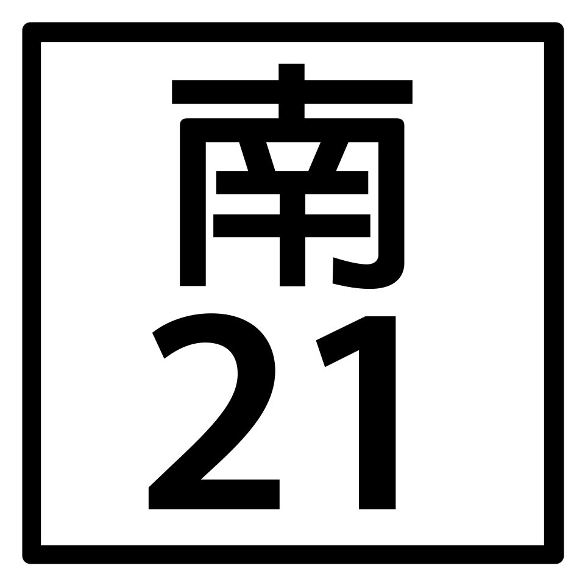
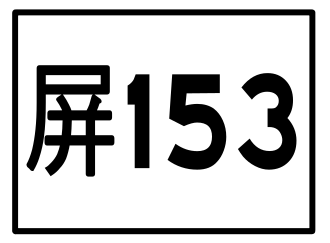
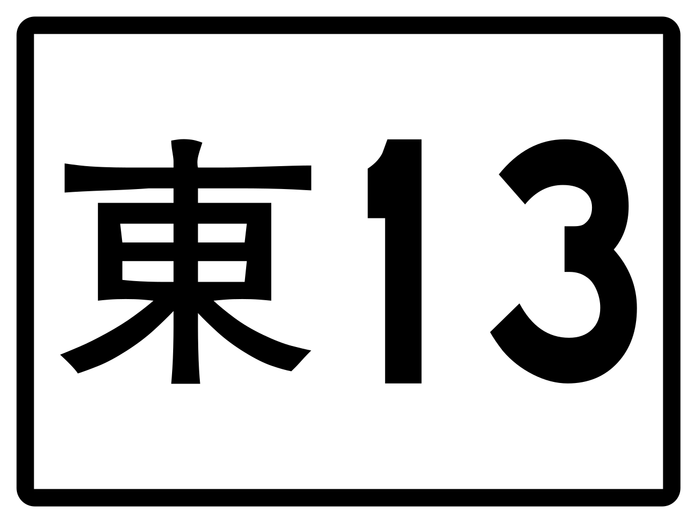

台灣機車環島行程
共 七 天行程說明
路線概覽
北埔、後龍、白沙屯、通霄、鹿港
- 06:30從家裡出發
- 06:301:45 ｜ 67 km ｜ 67 km08:15家裡 → 新竹北埔老街大漢溪環河道路→→
- 08:151:3009:45新竹北埔老街
- 09:451:15 ｜ 42 km ｜ 109 km11:00北埔老街 → 臺灣桑耶寺→

→ - 11:001:0012:00臺灣桑耶寺
- 12:000:20 ｜ 8.6 km ｜ 117.6 km12:20臺灣桑耶寺 → 後龍好望角→→→

- 12:201:1513:35後龍好望角
- 13:350:15 ｜ 5.3 km ｜ 122.9 km13:50後龍好望角 → 白沙屯拱天宮→→
- 13:501:3015:20白沙屯拱天宮
- 15:200:2015:40通霄海灘短停
- 15:400:20 ｜ 10 km ｜ 132.9 km16:00白沙屯／通霄海灘 → 通霄神社
- 16:001:1517:15通霄神社
- 18:000:4518:45通霄市區補給
- 18:001:30 ｜ 59 km ｜ 191.9 km19:30通霄市區 → 鹿港→→鹿港市區道路
- 19:30抵達鹿港
| 住宿名稱 | 地址 | 價格 | 類型 | 狀態／偏好 | 備註 |
|---|---|---|---|---|---|
| 溫叨 青旅 | 彰化縣鹿港鎮龍山里龍山街 92 號 | 378$ | 獨立房間 | 已預訂等待回應 | Airbnb |
| 公園一鹿背包客棧 | 彰化縣鹿港鎮永安里自強街 50 巷 14 號 | 650$ | 宿舍式 | 3 | |
| 小艾人文工坊背包客棧 | 彰化縣鹿港鎮菜園里摸乳巷 23 號 | 710$ | 宿舍式 | 3 |
路線概覽
北港、北門、佳里、台南市區
- 07:001:0008:00鹿港起床／早餐整裝
- 08:001:45 ｜ 65 km ｜ 256.9 km09:45鹿港 → 北港

→濱河街→環河路一段→ - 09:451:0010:45北港朝天宮／北港老街
- 10:451:15 ｜ 46 km ｜ 302.9 km12:00北港 → 南鯤鯓・北門

→
→
→
→→ - 12:000:4512:45南鯤鯓代天府／北門市區
- 12:450:30 ｜ 17 km ｜ 319.9 km13:15北門 → 順福溫體牛肉湯→

→ - 13:150:4514:00順福溫體牛肉湯
- 14:000:55 ｜ 21 km ｜ 340.9 km14:55順福溫體牛肉湯 → 台南市區
- 14:55抵達台南市區
- 14:557:0522:00台南自由安排：觀夕平台、漁光島、神農街、大涼生態公園、林百貨、臺南市美術館、風神廟、國華街／保安路
| 住宿名稱 | 地址 | 價格 | 類型 | 狀態／偏好 | 備註 |
|---|---|---|---|---|---|
| 水倉依舊 | 臺南市中西區永福路二段 81 巷 18 號 | 556$ | 膠囊式 | 已付款 | booking.com |
| 清淨背包客棧-民權新館 | 臺南市中西區城隍里民權路一段 244 號 | 600$ | 宿舍式 | 2 | |
| Times Inn | 台南市中西區西門路一段 703 巷 8 號 | 667$ | 膠囊式 | 3 | |
| 我鹿背包輕旅 x mydeer backpacker | 臺南市中西區小西門里府前路一段 371 巷 26 號 | 450$ | 宿舍式 | 4 | |
| 老曼船長青年旅館 | 台南市東區北門路 2 段 2 號 | 當前額滿 |
路線概覽
早市、孔廟、七股、高雄港邊
- 06:000:3006:30起床
- 06:300:4507:15西羅殿牛肉湯
- 07:150:1507:30西羅殿 → 東菜市台南市區道路
- 07:301:3009:00東菜市
- 09:000:1009:10東菜市 → 臺南孔廟台南市區道路
- 09:101:0010:10臺南孔廟
- 10:106:0016:10七股方向隨意騎行：府城天險、七股海堤／北堤堤防、國聖港燈塔、七股鹽山／鹽田濕地、七股頂山賞鳥亭
- 16:102:15 ｜ 73 km ｜ 413.9 km18:25台南行程結束 → 高雄市區
- 18:25抵達高雄市區
- 晚間高雄晚間自由活動高雄市區道路
- 晚間旗津過港隧道／老街／渡輪
- 晚間哈瑪星／西子灣／駁二
| 住宿名稱 | 地址 | 價格 | 類型 | 狀態／偏好 | 備註 |
|---|---|---|---|---|---|
| 旅聚居青年旅舍 | 高雄市新興區中山一路 117 號 6 樓 | 440$ | 宿舍式 | 已預訂未付款 | booking.com |
| Single Inn Station 單人房高雄站前館 | 高雄市新興區新江里八德一路 392 號 | 766$ | 獨立房間 | 2 | |
| 星行旅 | 高雄市新興區六合一路 182 號 | 650$ | 獨立房間 | 3 | |
| 好七桃旅店 | 高雄市新興區六合二路 86 號 5 樓 | 547$ | 獨立房間 | 4 |
路線概覽
高雄市區、東港、大鵬灣、車城、墾丁
- 07:30從高雄市區住宿地點出發
- 07:300:1507:45高雄住宿 → 龍華市場高雄市區道路
- 07:451:0008:45龍華市場
- 08:450:30 ｜ 12 km ｜ 425.9 km09:15龍華市場 → 高雄國際機場高雄市區道路→
- 09:151:3010:45高雄國際機場
- 10:450:45 ｜ 23 km ｜ 448.9 km11:30高雄國際機場 → 東港市區
- 11:301:3013:00東港市區／大鵬灣自由安排：午餐／補給、東隆宮、大鵬灣海上教堂咖啡、潮口平台、紅樹林復育濕地公園
- 13:001:30 ｜ 57 km ｜ 505.9 km14:30東港／大鵬灣 → 車城市區→→
- 14:300:4515:15車城市區休息
- 15:151:15 ｜ 25 km ｜ 530.9 km16:30車城市區 → 墾丁

- 16:30抵達墾丁
- 入住後24 km ｜ 554.9 km墾丁住宿地點 → 南端點位來回
- 南端點位鵝鑾鼻公園／台灣最南點
| 住宿名稱 | 地址 | 價格 | 類型 | 狀態／偏好 | 備註 |
|---|---|---|---|---|---|
| 墾丁 My Home | 屏東縣恆春鎮墾丁里墾丁路通海巷 21-2 號 | 480$ | 膠囊式 | 已預訂現場付款 | booking.com；離龍磐近 |
| 返璞歸真墾丁背包客棧 KO Hostel | 屏東縣恆春鎮墾丁里墾丁路通海巷 195 號 | 350$ | 宿舍式 | 2 | 離龍磐近 |
| 仨食居室 | 屏東縣恆春鎮光明路 53 號 | 733$ | 宿舍式 | 3 | 離恆春近 |
| The First 南灣膠囊旅店 | 屏東縣恆春鎮南灣里南灣路 114 號 | 721$ | 膠囊式 | 4 | 離恆春近 |
路線概覽
龍磐、滿州、旭海、大武、多良、金崙、台東市區
- 09:30離開墾丁／補給確認
- 09:300:15 ｜ 12 km ｜ 566.9 km09:45墾丁 → 龍磐公園
- 09:450:10 ｜ 4 km ｜ 570.9 km09:55龍磐公園 → 滿州恆春界碑
- 09:550:3010:25滿州恆春界碑
- 10:250:20 ｜ 11 km ｜ 581.9 km10:45滿州恆春界碑 → 滿州→→
- 10:450:3011:15滿州市區／補給確認
- 11:151:15 ｜ 28 km ｜ 609.9 km12:30滿州 → 旭海→
- 12:300:3013:00旭海
- 13:001:15 ｜ 32 km ｜ 641.9 km14:15旭海 → 大武→→→
- 14:150:1514:30大武補給
- 14:300:25 ｜ 21 km ｜ 662.9 km14:55大武 → 多良
- 14:550:3015:25多良
- 15:250:10 ｜ 3.3 km ｜ 666.2 km15:35多良 → 金崙
- 15:350:3016:05金崙
- 16:051:00 ｜ 36 km ｜ 702.2 km17:05金崙 → 台東市區→
- 17:05抵達台東市區
| 住宿名稱 | 地址 | 價格 | 類型 | 狀態／偏好 | 備註 |
|---|---|---|---|---|---|
| 旅人驛站日暮微旅 | 臺東縣臺東市文化里中山路 414 號 | 524$ | 宿舍式 | 已預訂未付款 | booking.com |
| 友愛山序漫旅 | 臺東縣臺東市成功里大同路 141 號 | 540$ | 宿舍式 | 1 | |
| 台東鴻瑞輕旅2館 | 臺東縣臺東市中山里和平街 132 號 | 900$ | 宿舍式 | 3 | |
| 烏托邦國際青年旅舍 | 臺東縣臺東市中心里開封街 711 號 | 當前額滿 |
路線概覽
小野柳、台東八幡神社、金樽、東河、成功、石雨傘、長濱、金剛大道、豐濱、石梯坪、芭崎、花蓮市區
- 09:30離開台東市區
- 09:300:15 ｜ 7.5 km ｜ 709.7 km09:45台東市區 → 小野柳
- 09:450:2010:05小野柳
- 10:050:25 ｜ 24 km ｜ 733.7 km10:30小野柳 → 台東八幡神社 → 金樽
- 10:300:2010:50金樽
- 10:500:05 ｜ 2 km ｜ 735.7 km10:55金樽 → 東河
- 10:550:3011:25東河
- 11:250:25 ｜ 30 km ｜ 765.7 km11:50東河 → 台 23／泰源隧道 → 成功市區→→
- 11:501:0012:50成功市區
- 12:500:15 ｜ 11 km ｜ 776.7 km13:05成功市區 → 石雨傘
- 13:050:1513:20石雨傘
- 13:200:15 ｜ 9.1 km ｜ 785.8 km13:35石雨傘 → 長濱寧埔界碑
- 13:350:3014:05長濱寧埔界碑
- 14:051:05 ｜ 27 km ｜ 812.8 km15:10長濱寧埔界碑 → 長濱市區 → 金剛大道 → 豐濱北回歸線地標→

→ - 15:100:1515:25豐濱北回歸線地標
- 15:250:10 ｜ 5.1 km ｜ 817.9 km15:35豐濱北回歸線地標 → 石梯坪
- 15:350:2015:55石梯坪
- 15:551:00 ｜ 33 km ｜ 850.9 km16:55石梯坪 → 芭崎休息區
- 16:550:2017:15芭崎休息區
- 17:151:00 ｜ 35 km ｜ 885.9 km18:15芭崎休息區 → 花蓮市區
- 18:15抵達花蓮市區
- 入住後住宿地點 → 花蓮市區晚間點位花蓮市區道路
- 花蓮市區晚間點位花蓮將軍府
太平洋公園
| 住宿名稱 | 地址 | 價格 | 類型 | 狀態／偏好 | 備註 |
|---|---|---|---|---|---|
| 花蓮青年旅館．北吉光輕旅 | 花蓮縣花蓮市國聯里中山路 601 巷 1 弄 19 號 | 432$ | 宿舍式 | 已預訂未付款 | booking.com |
| 小旅行迷你公寓背包客棧 | 花蓮縣花蓮市國聯里國聯一路 103 號 | 495$ | 宿舍式 | 2 | |
| 花蓮好人青旅 | 花蓮縣花蓮市國聯里國聯二路 150 號 | 346$ | 獨立房間（雙人） | 3 |
路線概覽
吉安、新城、清水斷崖、烏石鼻／烏岩角、蘇澳／南方澳、礁溪、台北
- 08:30離開花蓮市區住宿地點
- 08:300:1008:40花蓮市區住宿地點 → 吉安慶修院花蓮市區道路
- 08:400:3009:10吉安慶修院
- 09:100:30 ｜ 9.5 km ｜ 895.4 km09:40吉安慶修院 → 新城
- 09:400:2010:00新城短停
- 10:001:00 ｜ 23 km ｜ 918.4 km11:00新城 → 清水斷崖
- 11:000:1011:10清水斷崖
- 11:101:15 ｜ 42.3 km ｜ 960.7 km12:25清水斷崖 → 烏石鼻／烏岩角→
- 12:250:2012:45烏石鼻／烏岩角
- 12:450:25 ｜ 13.5 km ｜ 974.2 km13:10烏石鼻／烏岩角 → 蘇澳／南方澳
- 13:101:0014:10蘇澳／南方澳
- 14:101:00 ｜ 30 km ｜ 1004.2 km15:10蘇澳／南方澳 → 礁溪→
- 15:101:1516:25礁溪
- 16:251:40 ｜ 59 km ｜ 1063.2 km18:05礁溪 → 台北→106乙
- 18:05抵達台北
旅行準備
應準備物品及預算
應準備物品及預算
應準備物品
- 醫藥包
- 塑膠雨衣
- 手電筒
- 夾鏈袋
- 塑膠袋
已有物品
- 三套衣服
- 充電線
- 充電頭
- 行動電源
- 手套
已購買物品（已花費總計：1,659$）
- 備註：新增或調整已購買物品時，請同步更新本段標題的已花費總計、準備物品預算與總預算。
- 補胎包：367$
- 機車手機架：260$
- 機車後座包：584$
- 防水襪：207$
- 旅遊平安險：241$
預算
住宿預算
| 天數 | 地點 | 住宿預算估計 |
|---|---|---|
| 第 1 晚 | 鹿港／彰化 | 378$ |
| 第 2 晚 | 台南 | 556$ |
| 第 3 晚 | 高雄 | 440$ |
| 第 4 晚 | 墾丁 | 480$ |
| 第 5 晚 | 台東 | 524$ |
| 第 6 晚 | 花蓮 | 432$ |
- 實際將花費的住宿費用：2,810$
- 以 6 晚計算，平均住宿費用約 468$／晚
飲食預算
| 項目 | 平均 | 總預算 |
|---|---|---|
| 飲食 | 約 430$／天 | 3,010$ |
- 以 7 天計算，平均每日飲食預算約 430$。
加油預算
- 目前 HTML 已排定至台北，已知累計里程約 1,063 km。
- 加油預算：1,500$
準備物品預算
| 項目 | 預算 |
|---|---|
| 準備物品 | 1,659$ |
總預算
| 類別 | 預算 |
|---|---|
| 住宿 | 2,810$ |
| 飲食 | 3,010$ |
| 加油 | 1,500$ |
| 準備物品 | 1,659$ |
| 合計 | 8,979$ |
時間為目前規劃版本，後續若依住宿、天氣、體力或現場狀況調整，會再同步更新。